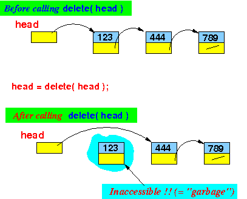

- Java's way to delete the
first element from
a linked list:
List delete ( List head ) { return( head.next ); // Make the second element the new head }
- Why this
will not work in C:
- The deleted linked list elements
becomes garbage (inaccessible):
 - What will happen sooner or later:
- Eventually (after many deletions), the computer memory will become exhausted
- When computer memory is
exhausted
(no more unused memory cells),
the Java run time system will
invoke the
garbage collector
and reclaim the inaccessible
memory cells
- In a C program, when
computer memory is
exhausted,
the C program will
crash
(because C does
not have any
garbage collector)
- You (the C programmer) is responsible for the un-reserving of memory cells used for storing the deleted list elements !!!!
- The deleted linked list elements
becomes garbage (inaccessible):
- In Java, you should have
seen
some thing like this to
delete the
first element from
a linked list:
class List { int value; List next; } public class delete { /* ==================================================== delete(h): delete the first elem from the list h return new list ==================================================== */ public static List delete (List h) { if ( h != null ) return (h.next); // Return new list that starts at h.next else return null; } public static void main(String[] args) { List head = makeList( ); // Make an list for demo print(head); /* ------------------------------------------------- Delete the first list element from list at head ------------------------------------------------- */ head = delete(head); // Delete first elem in head print(head); /* ------------------------------------------------------- Delete the first list element from list at head AGAIN ------------------------------------------------------- */ head = delete(head); // Delete first elem in head print(head); } // Make a list static List makeList( ) { List h = null; List p; for ( int i = 1; i <= 5; i++ ) { p = new List( ); p.value = i; p.next = h; h = p; } return h; } // Print the list public static void print(List h) { while (h != null) { System.out.printf("%d ", h.value); h = h.next; } System.out.printf("\n\n"); } }
- Example Program:
(Demo above code)

- Prog file: /home/cs255001/demo/C/Linked-list/delete.java
How to run the program:
- To compile: javac delete.java
- To run: java delete
I will again show you the same code in C.
But now notice how we must de-allocate the deleted List object before we return from the function !!!
- This is the same program as
above, but in the
C language.
I don't want to point out the syntax differences (it was pointed out in the insert( ) function.
I highlighted the part where you must de-allocate the deleted List element:
#include <stdio.h> #include <stdlib.h> struct List { int value; struct List *next; }; struct List *makeList( ); // Declare these help functions to void print(struct List *h); // avoid compile error /* ==================================================== delete(h): delete the first elem from the list h return new list ==================================================== */ struct List *delete (struct List *h) { struct List *newHead; if ( h != NULL) { newHead = h->next; // Save the value h->next // Because free(h) MAY corrupt h->next !!! free( h ); // *** De-allocate the deleted list object at head h !!! // *** free(h) MAY corrupt h->value and h->next !! return (newHead); // Return new list that starts at h.next } else return NULL; } int main(int argc, char *argv[]) { struct List *head = makeList( ); // Make an list for demo print(head); /* ------------------------------------------------- Delete the first list element from list at head ------------------------------------------------- */ head = delete(head); // Delete first elem in head print(head); /* ------------------------------------------------------- Delete the first list element from list at head AGAIN ------------------------------------------------------- */ head = delete(head); // Delete first elem in head print(head); } // Make a list struct List *makeList( ) { struct List *h = NULL; struct List *p; for ( int i = 1; i <= 5; i++ ) { p = malloc( sizeof(struct List) ); p->value = i; p->next = h; h = p; } return h; } // Print the list void print(struct List *h) { while (h != NULL) { printf("%d ", h->value); h = h->next; } printf("\n\n"); }
- Example Program:
(Demo above code)
- Prog file: /home/cs255001/demo/C/Linked-list/delete.c
How to run the program:
- To compile: gcc delete.c
- To run: ./a.out